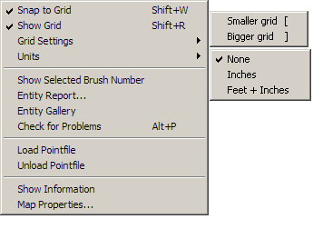
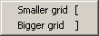
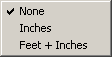
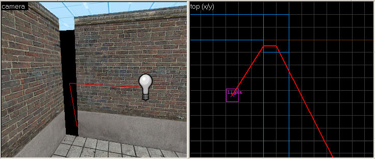

The Map Menu
The Map menu contains a number of functions related to the display of the map, as well as global viewing and manipulation of map contents and properties.
Snap to grid Shortcut: SHIFT+W
Will cause objects and selection boxes to snap to the current grid.
Show grid Shortcut: SHIFT+R
You can use this to toggle the grid display on and off. Objects will still snap to the grid if the Snap to grid option is enabled, regardless if the grid is visible.
Grid settings Shortcut: [ and ]
This allows you to increase or decrease the current Snap to Grid size. The current grid size is show in the status bar at the bottom of the Hammer window.

Units
This allows you to changes the units of measurement from standard world units to physical units of feet or inches. Picking None will use Source Engine world units.

Show Selected Brush Number
This displays the brush number of the selected brush. You must select a single non-entity brush for this command.
Entity Gallery
Pastes a copy of every type of entity in the game data file into the current map. Mainly used for debugging purposes.
Entity report
Opens the Entity Report dialog, which can be used to manage your entities and do quick searches for specific entities, providing an easy alternative to searching through your map manually.
Check for problems Shortcut: ALT+P
Opens the Check for Problems dialog that will analyze the map and notify you of any errors it finds.
Load Pointfile
If your map is not totally sealed, the compile tools (vbsp.exe, specifically) will report a “leak” and generate a pointfile. A pointfile contains information Hammer can use to trace a line from one of the map's entities to the source of the leak. This is represented in the 2D and 3D views by a thick red line. The Load Pointfile command will open the pointfile data associated with the current map, if it can locate the file. If not, it will display an Open dialog that allows you to load the pointfile. The pointfile will have a .lin or .pts filename extension, depending on the game compilation tools you are using.
|  |
| The Load Pointfile command shows the path to the leak in the Hammer viewports. |
Unload Pointfile
Use this command to remove the display of pointfile data from the 2D and 3D views of the current map file.
Show Information
This brings up the Map Information dialog, which gives you some statistics on the currently selected map file.
Map properties...
This will open an Object Properties dialog box, containing different editable parameters for the current map file. This is also known as the worldspawn entity. The worldspawn is an entity that defines some characteristics of the world, including the map title and skybox. See worldspawn in the Entity Guide for more information.
© 2004 Valve Corporation. All rights reserved. Valve, the Valve logo, Half-Life, the Half-Life logo, the Lambda logo, Steam, the Steam logo, Team Fortress, the Team Fortress logo, Opposing Force, Day of Defeat, the Day of Defeat logo, Counter-Strike, the Counter-Strike logo, Source, the Source logo, Hammer and Counter-Strike: Condition Zero are trademarks and/or registered trademarks of Valve Corporation. Microsoft and Visual Studio are trademarks and/or registered trademarks of Microsoft Corporation. All other trademarks are property of their respective owners.